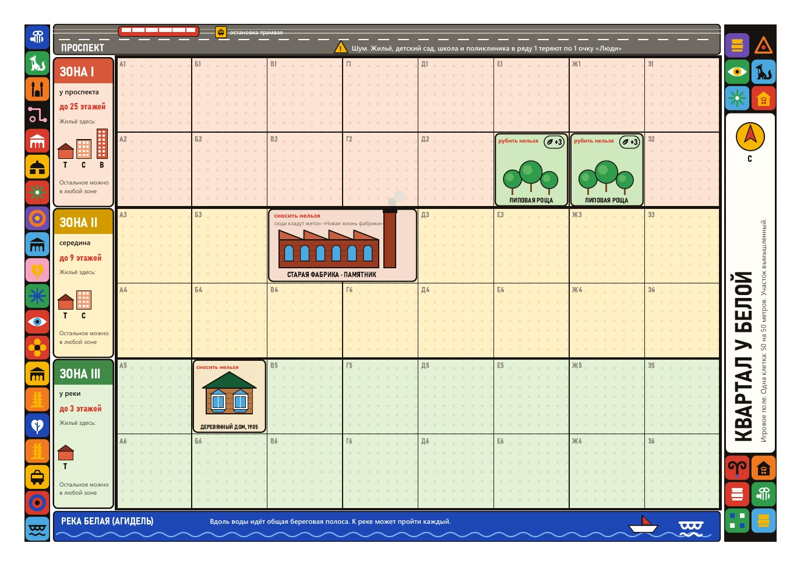

Урбаншкола
Как договориться о будущем места, если у каждого на него свои планы?

Территория глазами жителей
Урбаншкола учит читать карту, наблюдать за привычным местом и обсуждать, что в нём стоит изменить.
Например, ребята рисуют район по памяти. Затем сравнивают карты и ищут три места, которые заметили почти все, и три места, которые запомнились только одному человеку.
В уфимской адаптации курса три темы. Ребята сначала исследуют пространство вокруг себя, затем выясняют, кто пользуется общими местами и отвечает за них. Наконец пробуют договориться о будущем целого квартала.
Квартал у Белой
На игровом поле рядом с рекой стоят старая фабрика и деревянный дом, растёт липовая роща. Команда выбирает, где разместить жильё и что оставить свободным. Участок у проспекта шумный, а берегом пользуются все. Каждое решение приходится объяснять с учётом этих условий.
В другой игре участники проводят слушания о будущем кинотеатра «Курай». Они представляют разные интересы и записывают условия, на которых готовы договориться.
Слушания в уфимском лицее
Команда «Мироселья» провела деловую игру для семиклассников Башкирского лицея № 136 имени М. Искужина в Уфе.
В рамках «Школы юного предпринимателя» ребята обсуждали застройку Сипайлово. Занятие прошло в формате городских слушаний.
Из города в село
Эти вопросы важны и для Верхних Терм. Кто будет приходить в мастерские? Как жители пользуются двором бывшей школы сегодня? Что стоит сохранить, если у здания появится новая жизнь? С такого разговора можно начинать работу над сельской территорией.